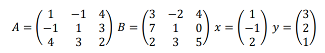

A <- matrix(c(1,2,4,1,1,0,1,1,2), nrow=3, ncol=3, byrow=TRUE) # byrow=TRUE -> disusun per baris
APertemuan 1: Aljabar Matriks di R
Pengantar Multivariat
Offline di Departemen Matematika
Notasi Matrix di R
Untuk membuat suatu matrix di R, gunakan fungsi
matrix(<values>, nrow=<jumlah baris>, ncol=<jumlah kolom>, byrow=TRUE/FALSE)
Argumen byrow digunakan untuk mengatur apakah matrix disusun per baris atau per kolom.
A <- matrix(c(1,2,4,1,1,0,1,1,2), nrow=3, ncol=3, byrow=FALSE) # byrow=FALSE -> disusun per kolom
ATiap baris dan kolom dapat diberikan nama dengan argumen dimnames=list(rownames, colnames)
# Matriks disusun per baris diberikan nama
rownames = c("row1", "row2", "row3")
colnames = c("col1", "col2", "col3")
A <- matrix(c(1,2,4,1,1,0,1,1,2), nrow=3, ncol=3, byrow=TRUE, dimnames=list(rownames, colnames))
ADataframe to Matrix
Untuk mengubah suat dataframe menjadi matrix, dapat digunakan fungsi as.matrix()
data(iris)
data <- head(iris[, c('Sepal.Length', 'Sepal.Width')])
mat_data <- as.matrix(data)
mat_datastr(data)
str(mat_data)Operasi Matrix
Penjumlahan dan Pengurangan
Operasi penjumlahan dan pengurangan pada matriks dapat dilakukan layaknya operasi penjumlahan dan pengurangan pada skalar di R
A <- matrix(c(1,1,2,3,1,1,4,1,3), ncol=3, byrow=T)
B <- matrix(c(1,2,3,1,1,4,5,6,7), ncol=3, byrow=T)
A
BA + BA - BPerkalian Matriks dengan Skalar
Operasi perkalian pada matriks dapat dilakukan layaknya operasi perkalian pada skalar di R
A <- matrix(c(1,1,3,2,1,4), ncol=3, byrow=T)
k <- 2
k * APerkalian Matriks dengan Matriks
Operasi perkalian matriks dengan matriks harus menggunakan tanda %*%
A <- matrix(c(1,1,1,1,2,1), ncol=3, byrow=T)
B <- matrix(c(2,1,1,2,3,1), nrow=3, byrow=T)
A
B
A %*% B
WarningHadamard Product (Element-wise Multiplication)
Melakukan perkalian matriks dengan matriks tanpa menggunakan tanda % akan melakukan operator lain, yaitu Hadamard Product
A <- matrix(c(2,0,-1,4,1,3), ncol=3, byrow=T)
B <- matrix(c(1,3,7,2,0,6), ncol=3, byrow=T)
A
BA * BTranspose
Transpose matriks dapat dilakukan dengan fungsi t()
A <- matrix(c(1,1,3,5,2,1,1,0,1,2,3,5), ncol=4, byrow=T)
At(A)Trace
Untuk penghitungan trace, diperlukan library matlib dengan fungsi tr()
library(matlib)
A <- matrix(c(1,7,6,8,3,9,4,-2,-8), ncol=3, byrow=T)A
tr(A) # 1 + 3 - 8 = -4Determinan
Determinan matriks dapat dihitung dengan fungsi det()
A <- matrix(c(1,3,2,8,17,21,2,7,1), ncol=3, byrow=T)
A
det(A)Invers
Invers matriks A dapat dihitung dengan fungsi solve(A)
A <- matrix(c(1,3,2,8,17,21,2,7,1), ncol=3, byrow=T)
A
solve(A)Power Matrix
Matriks A^n dapat dihitung dengan operator A %^% n
library(expm)
n <- 3
A <- matrix(c(1,1,2,3,1,1,4,1,3), ncol=3, byrow=T)A
A %^% n
WarningBatasan n pada A %^% n Power Matrix
Power matrix dalam fungsi dari library expm ini mengasumsikan nilai n adalah bilangan bulat positif. Jika ingin menggunakan nilai n non bilangan bulat positif.
Square Root Matrix
Dari library expm, dapat dicari akar kuadrat dari suatu matrix dengan fungsi sqrtm
sqrtm(A)Bukti:
round(Re(sqrtm(A) %*% sqrtm(A)))Matriks Identitas
Matriks identitas n x n dapat dengan mudah dibuat menggunakan fungsi diag(n)
diag_mat <- diag(5)
diag_matVektor
Notasi vektor sama dengan membuat suatu matriks dengan ncol=1
x <- matrix(c(1,0,2), ncol=1, byrow=T)
y <- matrix(c(2,2,1), ncol=1, byrow=T)
x
yInner Product
print(t(x) %*% y) # bentuk skalar dan simetriOuter Product
print(x %*% t(y)) # tidak bersifat simetriRank Matriks
Untuk menghitung rank matriks, dibutuhkan library Matrix dengan fungsi rankMatrix()
library(Matrix)
A <- matrix(c(5,-14,2,-10,-5,-10,10,2,-4), ncol=3, byrow=T)
rankMatrix(A)Bentuk Eselon Baris
Untuk membuat bentuk eselon baris suatu matriks, dibutuhkan library matlib dengan fungsi echelon()
A <- matrix(c(-1,2,0,4,5,-3,3,-7,2,0,1,4,2,-5,2,4,6,1,4,-9,2,-4,-4,7), ncol=6, byrow=T)
echelon(A, reduced = TRUE)Eigenvalues
Untuk mencari nilai eigen, gunakan fungsi eigen() dan akses nilainya dengan $values
A <- matrix(c(4,2,2,2,4,2,2,2,4), ncol=3, byrow = TRUE)
A
eig_val <- eigen(A)$values
eig_valEigenvectors
Untuk mencari vektor eigen dari nilai eigen yang bersesuaian, gunakan $vectors
eig_vec <- eigen(A)$vectors * (-1) # Dikalikan dengan -1
eig_vecDekomposisi Spectral
Dari eigenvalues dan eigenvector, dapat dibentuk suatu dekomposisi spektral dari suatu matriks.
round(eig_vec %*% diag(eig_val) %*% t(eig_vec))Dekomposisi Cholesky
Dekomposisi cholesky dari suatu matriks A dapat dilakukan dengan fungsi chol(A)
A <- matrix(c(3,0,-3,0,6,3,-3,3,6), ncol=3, byrow=T)
A
chol(A)Sehingga dapat dibuktikan A = U`U dengan U matriks segitiga atas dari dekomposisi cholesky matriks A
t(chol(A)) %*% chol(A)Singular Value Decomposition (SVD)
A <- matrix(c(1,0,1,0,1,0), ncol=3, byrow = TRUE)
A
svd_A <- svd(A)Nilai diagonal matriks D dapat diakses dengan $d
svd_A$dMatriks U dapat diakses dengan $u
svd_A$uMatriks V dapat diakses dengan $v
svd_A$vSehingga dapat dibuktikan A = UDV`
svd_A$u %*% diag(svd_A$d) %*% t(svd_A$v)Ortogonalisasi Matrix (Gram-Schmidt)
Ortogonalisasi matrix dengan proses Gram-Schmidt dapat dilakukan dengan fungsi GramSchmidt() dari library matlib.
A <- matrix(c( 1:3, 3:1, 1, 0, -2), 3, 3)
A
GramSchmidt(A)Bukti:
A_gs <- GramSchmidt(A)
round(A_gs %*% t(A_gs))Latihan Soal
Diberikan matriks berikut

Carilah nilai:
2.576 x (A + B)
Bx
y`B
x`Ay
Inner product dari x dan x
Inner product dari x dan y
Outer product dari y dan y
Nilai eigen dari A menggunakan
eigen()$valuesdan hitung tanpa bantuan kode. Apakah nilainya sama?Vektor eigen dari A menggunakan fungsi
eigen()$vectorsdan hitung tanpa bantuan kode. Apakah nilainya sama?Matriks U, D dan V dari singular value decomposition pada invers dari matriks B